ENGR338 Lab 2017
Fall
Name: Lane Schultz
Lab 10: More About FPGA
Part 1:
OR:
Simulation:
For OR logic, either or both inputs have to be on for the output to be
high. The output will be low otherwise.
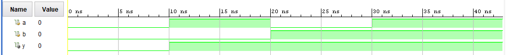
Figure: OR logic on a simulation is shown.
FPGA:
OR gate logic was shown on the FPGA. If both input switches are off,
then LED 0 will be off. If either or both input switches are on, then
LED 0 will turn on.
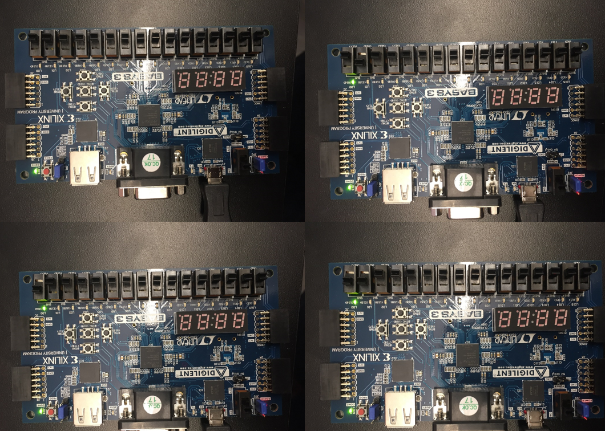
Figure: OR logic on an FPGA is shown.
XOR:
Simulation:
When both inputs are low, the output will be low. When either input is
high and the other is low, then the output will be high. If both inputs
are low, then the output is high.
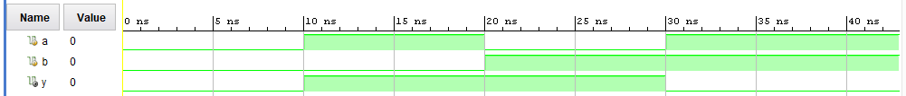
Figure: XOR logic on a simulation is shown.
FPGA:
XOR logic was displaced using an FPGA. The only logic that resulst in
LED 0 to be on is for one switch to be on while the other is off. If
both switches are in the state of on or off, then LED 0 will be off.
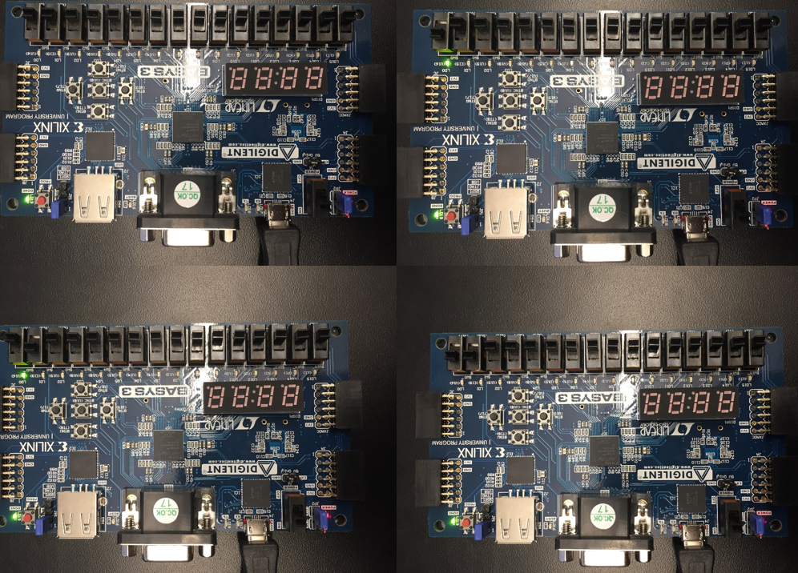
Figure: XOR logic on an FPGA is shown.
Inverter:
Simulation:
If the input is high, the output will be low and vice versa.
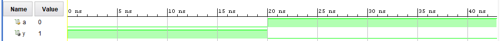
Figure: Inverter logic on a simulation is shown.
FPGA:
Inverter logic was displayed on an FPGA. If a programmed switch is off,
then LED 0 will be on and vice versa.
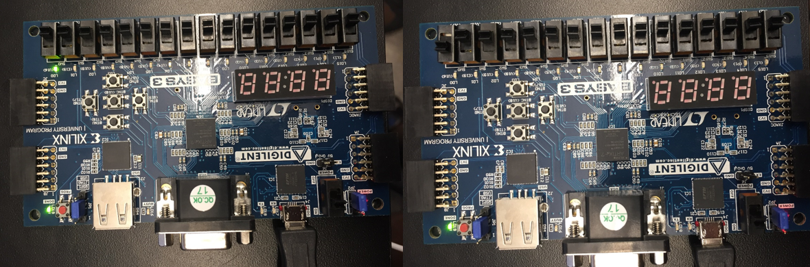
Figure: Inverter logic on an FPGA is shown.
2-Bit Full Adder:
Simulation:
For adding, if there is no input then the sum and carry will be low. If
one input is high and the other is low, then the sum will be high and
the carry will be low. If both inputs are high, then the carry will be
high while the sum will be low.
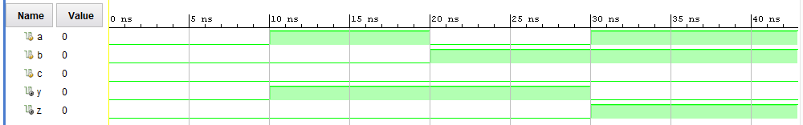
Figure: Adding logic on a simulation is shown.
FPGA:
Logic for adding in binary was shown on an FPGA. If all switches are
off, then all lights will be off. If one switch is on, then the
summation is indicated by LED 0. If both switches are on, then there
will be a carry indicated by LED 1.
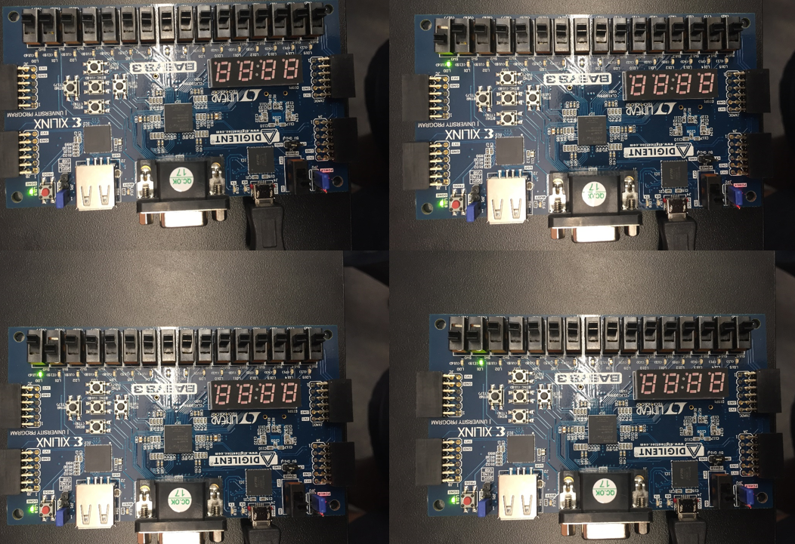
Figure: Adding logic on an FPGA is shown.
8-Input AND:
Simulation:
For the output to be high, all inputs have to be high. For any other
combination, the output will be low.
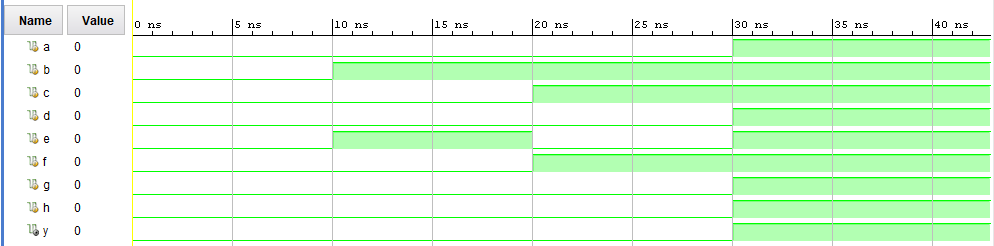
FigureAND logic on a simulation is shown.
FPGA:
The low value will dominate in AND logic. The only way for an led light
to be on is for all programed switches to be on. If a single switch is
in the off state, then LED 0 will be off.
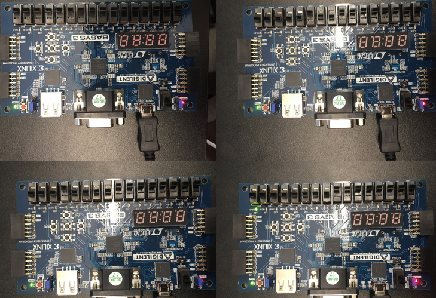
Figure: AND logic on an FPGA is shown.
4-1 MUX:
Simulation:
S0 and S1 (Figure below) can be used to control which of the inputs
goes to the output. For a more detailed explanation, read the FPGA
description.
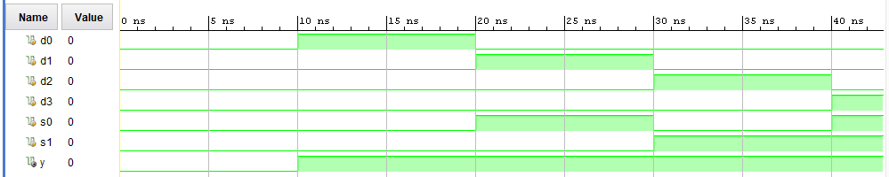
Figure: MUX logic on a simulation is shown.
FPGA:
A 4-1 MUX was programmed into an FPGA. Two switches (switches 4 and 5)
were used to display wheter or not a switch is on. When the switch 4
and 5 are off, the output LED 0 shows the state of switch 0. When
switch 4 is on and switch 5 is off, the state of switch 1 is shown.
When switch 4 is off and switch 5 is on, then the state of switch 2 is
shown. When both switch 4 and 5 are on, the state of switch 3 is shown.
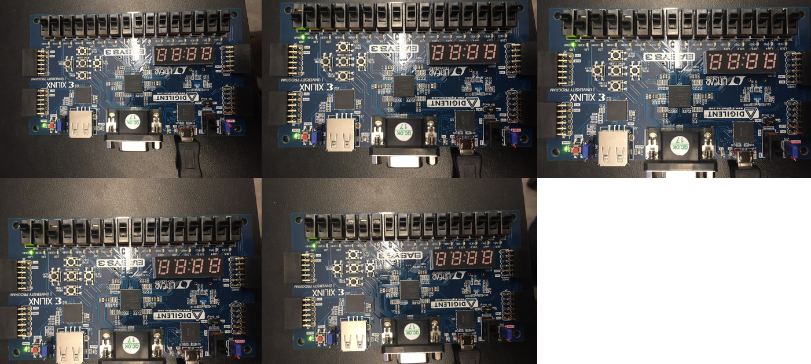
Figure: MUX logic on an FPGA is shown.
Part 2:
Time alternating leds where programmed into an FPGA. The function is
shown in the video below:
Part 3:
An FPGA was used to program the four seven segment displays. The
numbers zero through 9 where displayed by a combination of switches.
The results are below:
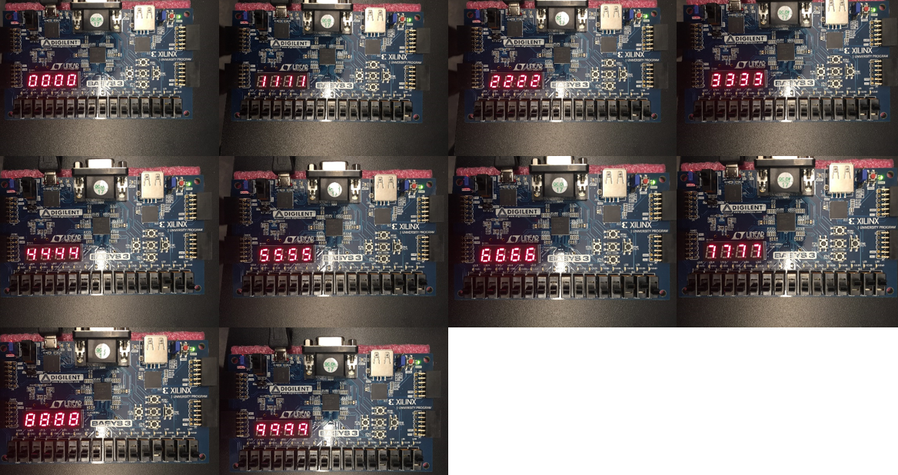
Figure: Four seven segment displays used to display numbers zero
through 9 is shown above.
Numbers zero through 9 where displayed
on one seven segment display. The results are shown below:
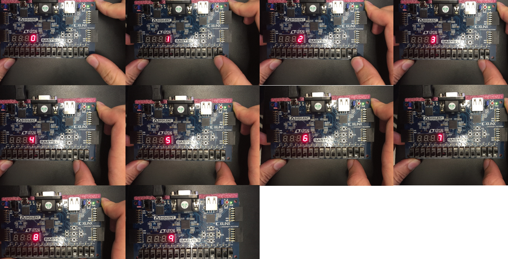
Figure: One seven segment displays used to display numbers zero through
9 is shown above.
Conclusion:
There were three main portions of this laboratory. The first segment
consisted of displaying OR, XOR, inverter, 2-bit adding, 8-input AND,
and 4-1 MUX logic in simulation and on an FPGA. For the second portion
of the laboratory, four led lights were controlled. The lights were
programmed to turn on or off in a sequential manner. The last portion
of this laboratory dealt with displaying the numbers zero through 9 on
seven segment displays. The number that was displayed was controlled
with switches. The numbers were displayed on four displays and one
display.